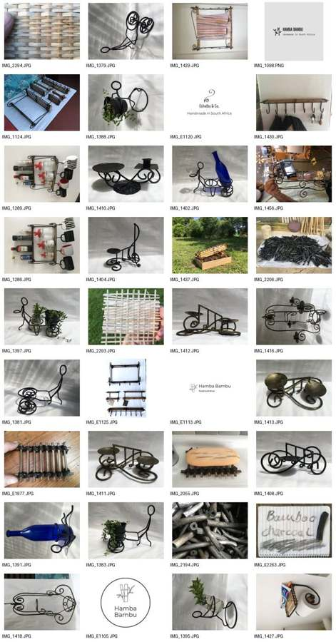

HOME & LIVING
Eshelby & Co.
Handmade metalwork with a useful, characterful approach to home and garden.
PROFILE COMING NEXT →The Co-Op is deliberately personal. We want you to know who made, grew or built what you are buying.


Olympus Flower solar cookers, rocket stoves and practical cooking technology.
MEET RAY →Handmade metalwork with a useful, characterful approach to home and garden.
PROFILE COMING NEXT →
Bamboo pieces and handmade work. Final range and maker story to be added from supplied material.
PROFILE COMING NEXT →
Wild Coast Raw Honey and a small collection of things grown or made at home.
VISIT THE FAMILY FARM →